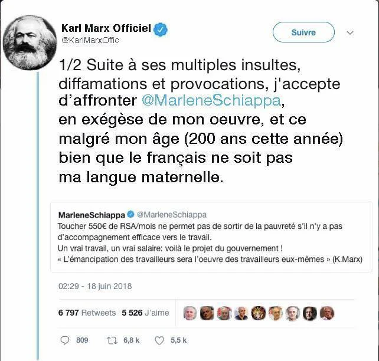

Visuel satirique relayé
Quand le compte parodique « Karl Marx Officiel » répond à Marlène Schiappa
Date indiquée par Facebook · 13 juillet 2018
Repères éditoriaux
Nous avons relayé une capture dans laquelle le compte parodique « Karl Marx Officiel » répond à une publication de Marlène Schiappa sur le RSA et le travail. Le message détourne sa référence à Marx, à l’occasion du bicentenaire de sa naissance.

Sources
Archive rouge · document diffusé sur Facebook · AR-0002-FB-02100
À lire aussi · « Neoliberalism ». Quatre cases pour une satire